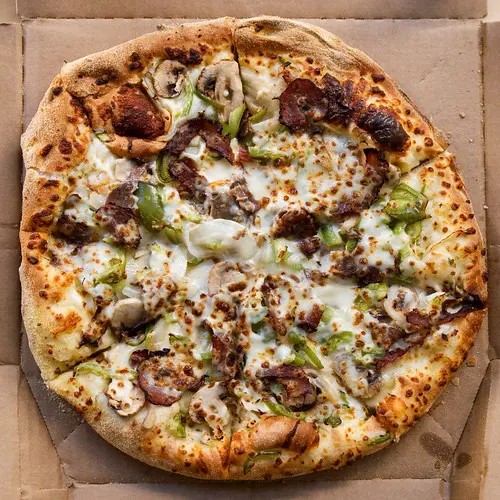
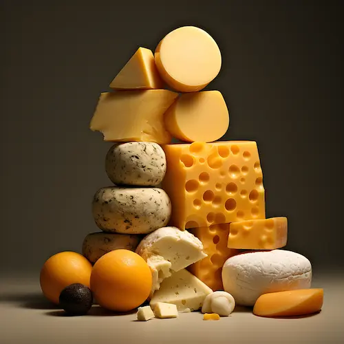
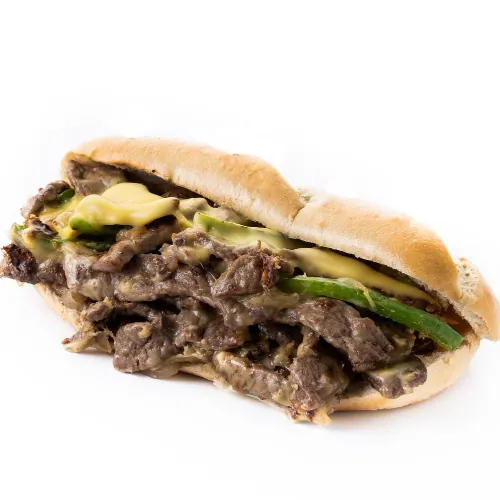

Philly CheeseSteak Pizza
What's in a Philly Cheesesteak Pizza
A Philly cheesesteak pizza is a delightful fusion that brings together the classic flavors of
a Philly cheesesteak sandwich with a delicious pizza base. One slice of this mouthwatering
creation, provided by Screamin' Sicilian Pizza Co., packs in 270 calories. Each slice is
generously topped with thinly sliced ribeye steak or beef, sautéed with onions and green
bell peppers for that savory depth we all love. To make it even better, mozzarella and
provolone cheeses melt beautifully over the toppings, creating a creamy, stretchy texture
that's simply irresistible. Some versions even throw in mushrooms and other veggies like
banana peppers for an extra burst of flavor! The base can be a classic tomato sauce or a
creamy white sauce, depending on your preference, and for that authentic Philly touch, you
might find drizzles of cheese whiz or garlic butter. Plus, this pizza is not just delicious;
its also a good source of protein, giving you 21% of your Daily Value, along with 19% of
your Daily Value of calcium. The result? A hearty, flavorful pizza that pays homage to the
beloved Philadelphia sandwich and is sure to satisfy your cravings!

My first Philly CheeseSteak Pizza
The first time I tried a Philly cheesesteak pizza, I was at a restaurant watching the 2016
NBA Finals
with friends. I vividly remember the server bringing the pizza to our table and how the
smell caught
everyone's attention. As I took a bite, the crispy, golden crust gave way to a rich layer of
melted
provolone and mozzarella cheese, that covered tender strips of well-seasoned beef. Each
mouthful was
a perfect mix of flavors: the juicy steak paired wonderfully with caramelized onions and
bell
peppers, all topped with a zesty marinara sauce that had just the right amount of spice. The
smell
was mouthwatering, with hints of garlic and pepper that made the whole experience even
better. It
was an amazing combination of two classic dishes that completely exceeded my expectations.

Which Cheese Works Best for Philly Cheesesteak Pizza?
The most commonly used cheese used in the Philly Cheesesteak Pizza Provolone are Cheeze,
Whiz, and American cheese . Personally, I use mozzarella and Alfredo sauce.
The mozzarella melts to a deliciously mushy, buttery cheesiness. If you're
feeling adventurous, you can add layer provolone over the Alfredo sauce. This creates a
wonderful depth of flavor, with the provolone adding a tangy kick that pairs perfectly with
the creamy Alfredo. Whether you stick to the classics or venture into new territory, cheese
is the key to making this pizza both satisfying and unforgettable

History of Philly Cheesesteak Pizza
The Philly cheesesteak pizza is a modern twist on Philadelphia's iconic cheesesteak sandwich, which
dates back to the 1930s when Pat and Harry Olivieri first created the sandwich with thinly sliced
steak and onions. Over time, cheese was added, and the sandwich became a Philadelphia favorite. As
pizza grew in popularity across the U.S., pizzerias began experimenting with regional dishes,
leading to the creation of the Philly cheesesteak pizza in the late 20th century. This pizza
combines the essential cheesesteak ingredients—steak, onions, peppers, and melted cheese—on a pizza
crust, offering a new way to enjoy the flavors of the classic sandwich. Today, its a popular
choice, especially in the Philadelphia area, blending the city's beloved sandwich with the comfort
of pizza.
Serving and Pairing Suggestions:
The right sides and drinks are important when having a Philly CheeseSteak Pizza, they can take it
from great to unforgettable. The first time i tried this pizza, i had a zesty coleslaw on the side. Its crunchy, tangy, and adds a
refreshing contrast to the warm, savory pizza- making it the pefect option. Since the dish is really cheesy, the hint of acidity
balances it out, keeping each bite feeling light and fresh.
If you're looking for something more filling, a side of garlic bread or soft pretzels on the side is
a great option. Wanna take things to the next level? Try a side of garlic butter or cheesy dipping
sauce to dunk your side or even pizza crust in, nothing is off limits!
As for drinks, a cold craft beer goes really well with the Philly cheesesteak pizza. Try a crisp
lager or pale ale—the bitter taste complements the rich steak and cheese without overwhelming the
flavors. If you're more of a wine person, go for a medium-bodied red like a Zinfandel or Merlot. These wines have just the right depth to balance the pizza's bold flavors without being overwhelming.
And for the non-alcoholic drinkers, i've found that a sparkling lemonade or iced tea are refreshing options that are slightly sweet and go well with the savory notes of the pizza.